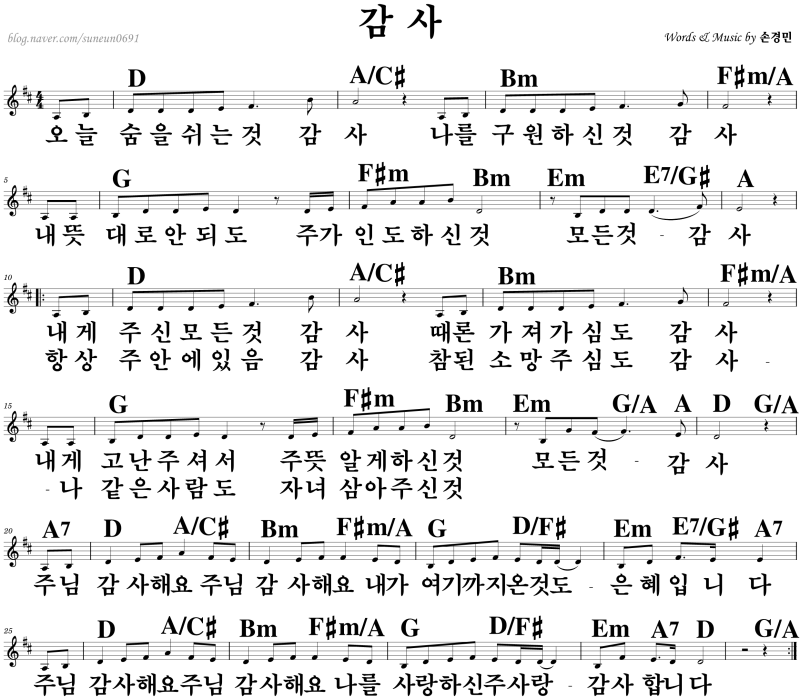

절대감사
2026년 11월 15일 추수감사주일 설교 "절대감사"(데살로니가전서 5장 16~18절)와 같은 메시지를, 또 다른 이야기로 함께 나누는 가정예배입니다.
누가복음 17:11-19 · 돌아와 감사한 한 사람
1. 묵상기도
다같이잠시 눈을 감고 마음을 가다듬습니다. 이번 한 주 동안 우리를 지키시고 먹이시고 돌보신 하나님을 떠올리며 나아갑니다.
2. 신앙고백
다같이나는 전능하신 아버지 하나님, 천지의 창조주를 믿습니다. 나는 그의 유일하신 아들, 우리 주 예수 그리스도를 믿습니다. 그는 성령으로 잉태되어 동정녀 마리아에게서 나시고, 본디오 빌라도에게 고난을 받아 십자가에 못 박혀 죽으시고, 장사된 지 사흘 만에 죽은 자 가운데서 다시 살아나셨으며, 하늘에 오르시어 전능하신 아버지 하나님 우편에 앉아 계시다가, 거기로부터 살아 있는 자와 죽은 자를 심판하러 오십니다. 나는 성령을 믿으며, 거룩한 공교회와 성도의 교제와 죄를 용서받는 것과 몸의 부활과 영생을 믿습니다. 아멘.
2004년 한국기독교교회협의회·한국기독교총연합회·대한성서공회 공동 새번역
3. 찬송
다같이감사

4. 대표기도
담당자미리 정한 가족이 아래 기도문을 그대로 읽거나, 참고하여 자신의 말로 기도합니다.
사랑하는 하나님 아버지, 이번 한 주도 우리 가족을 지켜 주시고 먹을 것과 잘 곳을 주셔서 감사합니다. 그런데 우리는 받은 것보다 없는 것을 더 많이 생각하고, 고맙다는 말보다 불평을 더 자주 했습니다. 용서해 주세요. 오늘 말씀을 들으며 하나님께 돌아와 감사하는 가정이 되게 해 주세요. 예수님 이름으로 기도합니다. 아멘.
5. 성경봉독
다같이누가복음 17:11-19 (개역개정)
11예수께서 예루살렘으로 가실 때에 사마리아와 갈릴리 사이로 지나가시다가
12한 마을에 들어가시니 나병환자 열 명이 예수를 만나 멀리 서서
13소리를 높여 이르되 예수 선생님이여 우리를 불쌍히 여기소서 하거늘
14보시고 이르시되 가서 제사장들에게 너희 몸을 보이라 하셨더니 그들이 가다가 깨끗함을 받은지라
15그 중의 한 사람이 자기가 나은 것을 보고 큰 소리로 하나님께 영광을 돌리며 돌아와
16예수의 발 아래에 엎드리어 감사하니 그는 사마리아 사람이라
17예수께서 대답하여 이르시되 열 사람이 다 깨끗함을 받지 아니하였느냐 그 아홉은 어디 있느냐
18이 이방인 외에는 하나님께 영광을 돌리러 돌아온 자가 없느냐 하시고
19그에게 이르시되 일어나 가라 네 믿음이 너를 구원하였느니라 하시더라
6. 말씀나눔
인도자오늘은 추수감사주일이었어요. 목사님은 "절대 감사"라는 말씀을 전해 주셨어요. 좋은 일이 있을 때만 하는 감사가 아니라, 힘든 일이 있어도 하나님 때문에 하는 감사예요. 오늘은 예수님께 고침을 받은 열 사람 이야기를 들어 볼게요. 열 사람이 고침을 받았는데, "고맙습니다" 하러 돌아온 사람은 몇 명이었을까요?
옛날 이스라엘에는 나병이라는 무서운 피부병이 있었어요. 나병에 걸리면 피부가 상하고, 손가락이나 발가락에 감각이 없어지기도 했어요. 그런데 몸이 아픈 것보다 더 힘든 게 있었어요. 나병에 걸린 사람은 집에서 살 수 없었어요. 가족과 떨어져 마을 밖에서 살아야 했고, 다른 사람이 가까이 오면 멀리서 "부정하다"고 외쳐서 오지 못하게 해야 했어요(레 13:45-46). 엄마 아빠도 안아 줄 수 없고, 친구와 같이 밥도 못 먹는 거예요.
그런 사람 열 명이 함께 지내고 있었어요. 그런데 예수님이 그 마을에 오신다는 소식을 들었어요. 그들은 예수님 가까이 갈 수 없어서 멀리 서서 있는 힘껏 소리쳤어요. "예수 선생님이여 우리를 불쌍히 여기소서!"
예수님은 그들을 보시고 "가서 제사장들에게 너희 몸을 보이라"고 하셨어요. 그때는 병이 나으면 제사장에게 몸을 보여 주고 "이제 깨끗하다"는 확인을 받아야 집으로 돌아갈 수 있었어요. 그런데 이상하지요? 아직 병이 낫지도 않았는데 제사장에게 가라고 하셨어요. 열 사람은 예수님 말씀을 듣고 길을 떠났어요. 그리고 가는 길에 몸이 깨끗해졌어요! 피부가 새살처럼 돌아온 거예요.
열 사람은 얼마나 기뻤을까요? 이제 가족을 만날 수 있어요. 그런데 그중 아홉 사람은 그대로 제사장에게, 집으로 달려갔어요. 딱 한 사람만 걸음을 멈추고 돌아섰어요. 그 사람은 큰 소리로 하나님을 찬양하면서 예수님께 돌아와 예수님 발 아래 엎드려 감사했어요. 그 사람은 사마리아 사람이었어요. 그때 유대 사람들은 사마리아 사람을 싫어해서 잘 상대하지도 않았어요. 모두가 낮게 보던 그 사람이 감사하러 돌아온 거예요.
예수님이 물으셨어요. "열 사람이 다 깨끗함을 받지 아니하였느냐 그 아홉은 어디 있느냐." 아홉 사람도 병은 나았어요. 하지만 고쳐 주신 분께는 돌아오지 않았어요. 선물만 받고, 선물을 주신 분은 잊어버린 거예요. 돌아온 한 사람에게 예수님은 "일어나 가라 네 믿음이 너를 구원하였느니라"고 하셨어요. 그 사람은 몸만 나은 게 아니라, 예수님을 만나 구원을 받았어요.
우리도 하나님께 많은 것을 받았어요. 하나님은 우리를 지으시고, 숨 쉬게 하시고, 가족을 주셨어요. 그리고 가장 큰 선물인 예수님을 보내 주셨어요. 예수님은 우리가 죄 때문에 하나님과 멀리 떨어져 있을 때, 십자가에서 대신 벌을 받으시고 우리를 하나님 가족으로 돌아오게 해 주셨어요. 감사는 좋은 일이 있을 때만 하는 게 아니에요. 오늘 힘든 일이 있어도, 우리를 이렇게 사랑하신 예수님께 돌아와 "고맙습니다" 하고 말할 수 있어요. 이번 주에는 우리 가족이 돌아온 한 사람이 되어 보면 좋겠어요.
7. 함께 나누는 이야기
다같이- 어린이와 함께 손가락 열 개를 다 펴 보세요. 그리고 "열 사람이 고침 받았어요" 하면서 아홉 개를 접고 하나만 남겨 보세요. "이 한 사람은 무엇을 했지?" 하고 물어보세요. 그다음 남은 손가락 하나로 오늘 고마운 것 하나를 말해 보게 해 주세요(예: "오늘 저녁밥 맛있게 먹었어요", "넘어졌는데 친구가 일으켜 줬어요"). 엄마 아빠도 손가락을 하나씩 펴며 돌아가며 말해 보세요.
- 함께 생각해보기 "선물만 받고 고맙다고 말하지 않은 적이 있니?" 하고 물어보세요. 생일 선물, 할머니가 사 주신 간식, 선생님이 도와주신 일처럼 아이가 떠올리기 쉬운 것으로 이야기해 주세요. 엄마 아빠도 하나님께 받고도 감사를 잊었던 일을 솔직하게 나눠 주세요.
- 우리 가정을 위해 이번 주에 우리 가족이 해 볼 것을 하나 골라 보세요. ① 저녁 식사 때마다 한 사람씩 "오늘 하나님께 감사한 것" 한 가지 말하기 ② 냉장고에 "감사 쪽지"를 붙이고 감사한 일이 생길 때마다 적어 두었다가 주말에 함께 읽기 ③ 고마운 분께(할머니, 선생님, 이웃) 감사 편지나 그림 보내기 ④ 누가복음 17장 15-16절을 가족이 함께 외워 보기
8. 합심기도
다같이가족이 돌아가며 짧게 한 가지씩 기도 제목을 나누고, 서로를 위해 소리 내어 기도합니다. 나이가 어린 자녀도 짧은 한마디로 참여할 수 있습니다.
9. 주기도문
다같이하늘에 계신 우리 아버지, 아버지의 이름을 거룩하게 하시며 아버지의 나라가 오게 하시며, 아버지의 뜻이 하늘에서와 같이 땅에서도 이루어지게 하소서. 오늘 우리에게 일용할 양식을 주시고, 우리가 우리에게 잘못한 사람을 용서하여 준 것같이 우리 죄를 용서하여 주시고, 우리를 시험에 빠지지 않게 하시고 악에서 구하소서. 나라와 권능과 영광이 영원히 아버지의 것입니다. 아멘.
2004년 한국기독교교회협의회·한국기독교총연합회·대한성서공회 공동 새번역